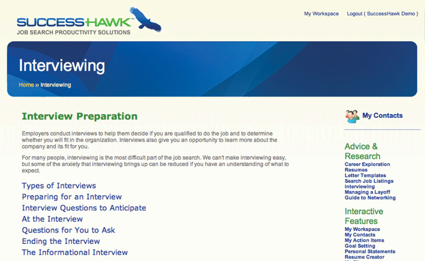

8.6 Chapter Review and Exercises
Control what you can control, and your interview will be more successful. This includes doing the following, but this list is far from exhaustive:
- Assess your strengths and weaknesses before the interview.
- Research the company and its competitors in advance of your meeting.
- Prepare and practice interview questions.
- Create a routine for the day of the interview to ensure you don’t rush or skip important steps.
- Write down five to seven questions to ask at the end of your interview to prove you are motivated to get this job offer.
Remember that interviews are subjectiveAn interviewer can make up their mind based on nonscientific data. They can have a preconceived notion of you as a candidate that has nothing to do with your strengths. and that a second interview is never a guarantee. Budgets can shift and your targeted company may have to pull an open requisition. Perhaps the company wants to promote from within and they may hire an internal candidate. Many interviewers hire in their own image, regardless of any interviewer training course they may attend. No matter what happens at the end of your interview, it’s important to stay positive and it’s equally important to not take it personally.
Regardless of the interview’s outcome, and especially if you don’t get the job, thank the interviewer for the interaction. Continue to keep in touch because that person can become an important part of your network. Leaving a positive impression can only help your future prospects because jobs for which you would be a perfect fit might open in the near term. Remember also that recruiters and hiring managers tend to move from company to company, and there is a strong likelihood that your paths may cross again. Maintaining positive relationships can only help your career.
Lastly, if you interview for a position and you don’t get it, at least appreciate the value and practice of your experience. Troubleshoot what could have gone better and improve on that one thing. If you are proactive enough at strengthening your interview ability and ensuring you have enough interviews lined up, you increase your chances of getting a job offer. Once that happens, you will probably be in the interviewer’s seat before long.
Chapter Takeaways
-
Before you even think of interviewing, you must know three things:
- Know yourself.
- Know your résumé well enough to enthusiastically speak about every minute detail.
- Know the company, the position, and the industry for which you are interviewing.
-
Knowing what to do before an interview is key to your success:
- Research the industry, the company, the competitors, and the interviewer (if possible).
- Practice the interview questions.
- Have a full dress rehearsal three days before the interview.
- Know where you are going in advance and ensure you show up early.
- Have a routine for the day of the interview.
-
Knowing what to do during an interview is critical:
- Maintain positive body language.
- Update your networking.
- Maintain your focus.
- Be authentic.
- Prepare questions to ask toward the end of the interview.
- Ask what the next step will be.
-
Knowing what to do after an interview can strengthen your chances of getting the job:
- Send a thank-you note.
- Update all parties relevant to your search.
- Map out your follow-up strategy.
- Things can go wrong during an interview. Knowing how to get back on track is vital to your interview success.
- Interviews can be very structured or very unstructured, depending on the interviewer and the industry.
- The best way to succeed in any interview is to prepare for every type of interview and every type of interviewer.
-
Interviews can be one of three types:
- Behavioral interviews
- Case interviews
- Informational interviews
-
Interviews can be conducted using different methods:
- Live interviews
- Phone interviews
- Videoconference or Skype interviews
- Taped interviews
- The venue will be either on campus or off campus and in either an office or a conference room.
- Some interviewers are more skilled at the interview process than others, so having a planned approach helps ensure your strengths are highlighted in the interview.
-
You need to be prepared to answer various types of interview questions in advance of the interview:
- Open-ended questions
- Specific questions
- Motivation questions
- Unusual questions
- Familiarize yourself with questions that are considered illegal.
- Avoid interviewer pet peeves to ensure maximum success during the interview process. Some of these include not being prepared, not having positive body language, and not being enthusiastic, among others.
Chapter Review
- How do you define an interview?
- What should you know about yourself before you actually interview for a position?
- What is the structure of a typical interview and what are some reasons an interview might be unstructured?
- Why is it important to prepare and practice?
- What are the most important things to do before an interview?
- How important is having a routine to follow on the day of the interview?
- What is body language and how can you use it to your advantage?
- When answering interview questions, why it is more effective to have a beginning, a middle, and an end to your response?
- What types of things can go wrong during an interview, and what can you do to get them back on track?
- What three things should you do after an interview?
- Why are thank-you notes important and how do you write an effective thank-you note?
- Why are the three main types of interviews?
- How do you prepare for an informational interview, and what are the main benefits to conducting them?
- What are the four different methods of interviewing?
- Why are more and more interviewers choosing to conduct phone interviews versus face-to-face interviews?
- What are the pros and cons of phone interviews?
- What is the difference between on-campus and off-campus interviewing? Why should you participate in both?
- How can you practice the most-asked interview questions?
- What strategies would you use to answer open-ended questions versus specific questions versus motivation questions?
- Why would an interviewer use unconventional interview questions, and what is the best way to practice answering them?
- What constitutes an illegal question, and what should you do if you are asked an illegal question during an interview?
- What interviewer pet peeves can you avoid?
SuccessHawk: Interview
For tips and ideas about preparing for interviews, click on Interviews in the Advice and Research Section of the menu bar on the right. You may also want to review the demo using Perfect Interview, an interactive online interview practice feature under Interactive Features. (Note: There is a charge of $19.95 for unlimited use of Perfect Interview for sixty days.)
